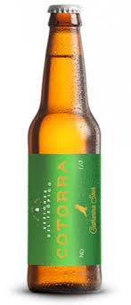
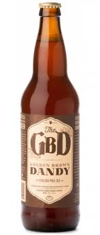
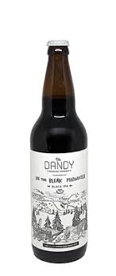
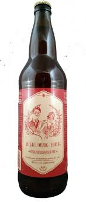

Dandy in the Underworld
5.5% ABV
The main Dandy. This beer is our most popular offering and available everywhere, all the time. A light
body with notes of coffee, chocolate, and light roast, this traditional Oyster Stout is sure to be a favourite.
Pairs well with oysters, fish, and other salty snacks!

Une Vieille Maitresse
4.5% ABV
This farmhouse ale is available year round in the bottle and draught. A table strength beer brewed with
rye and french saison yeast. It is light, refreshing, with a touch of spice and saison character. Brewed
once as a limited edition, we can't seem to shake this old mistress.

The Dandy Wild Sour Ale
7.3% ABV
A bold, malty sour ale soured with lactobacillus and fermented with a wild yeast strain. An upfront
sourness is balanced with wild yeast character for a rich sour experience.

The Golden Brown Dandy
6% ABV
Our English Pale ale. This beer is a low-carbonation ode to real-ale. A smooth malt body is balanced
with a highly intensive hops schedule to bring forward a great tasting beer to reward all ale lovers! Available
only in bottles and casks. Pairs well with meats, rich sauces and hard, aged cheeses.
Baltus van Tassel: Cherry Sour
7% ABV
Fall
An American Style Cherry Sour. A rich brown American Brown sour brewed with Sweet and Tart cherries
for the perfect accompaniment to shorter days and colder weather.

The Bleak Midwinter: Black IPA
6.5% ABV
Winter
A fruity Black IPA. With only a kiss of roast, this black IPA is fresh and juicy but dark as the coldest days
of winter. Citra and Mosaic are late hop additions to avoid the bitterness and focus on aroma.

The Jungle Bird: Tropical Dark Sour
5% ABV
Spring
An homage to the classic Tiki cocktail.
This beer has notes of demerara sugar, bitter lime, tropical
pineapple coming together for a refreshing sour that is like no other.

Bright Young Things: Hopped Wheat Ale
5.5% ABV
Summer
English Summer Ale. A style developed during a late 70’s heat wave
in England, this beer is designed to
refresh in the hot summer sun. Dry, with a touch of wheat and toasted Victory malt, it is balanced with a
touch of bitterness and a sweet citrus aroma. Patios, BBQ’s, and friends all pair perfectly with this beer!